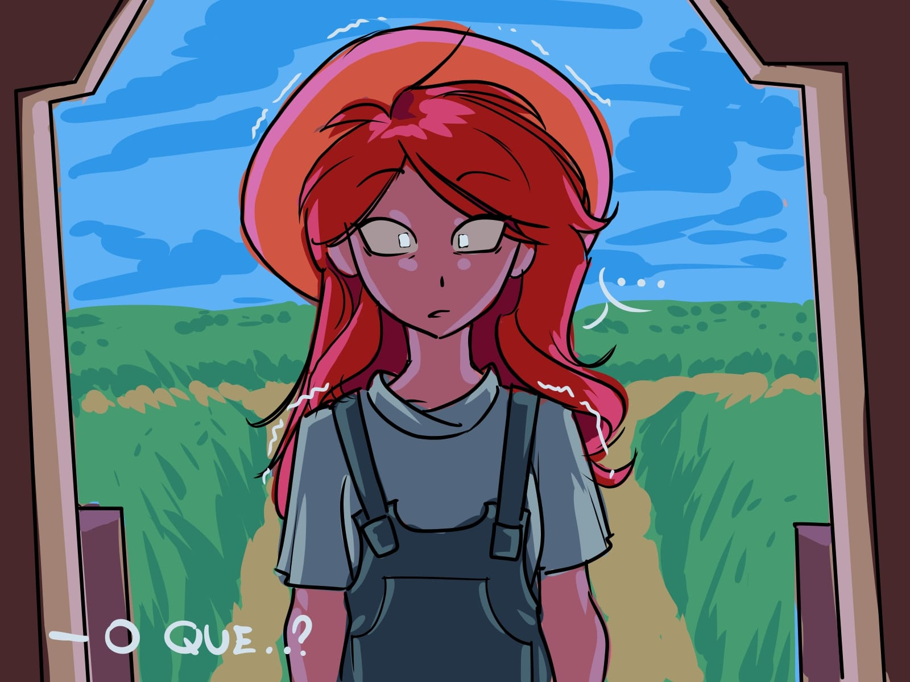
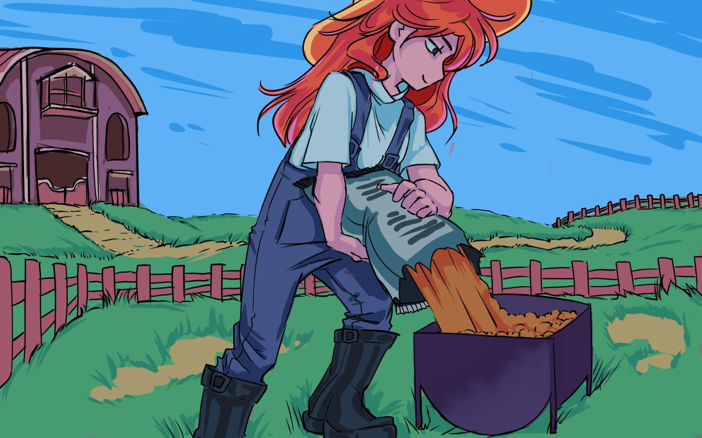
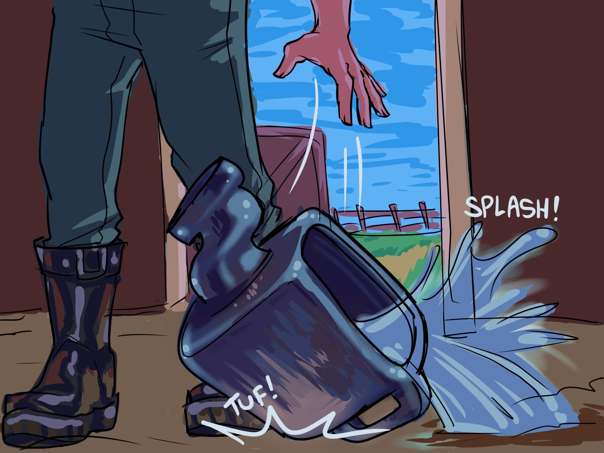
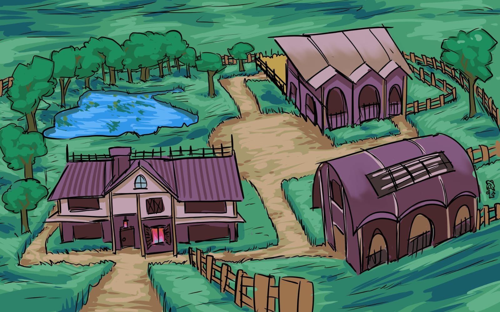
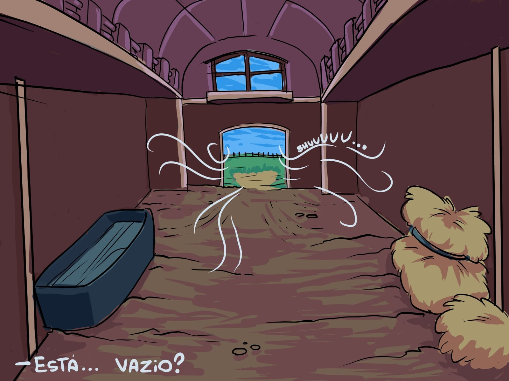
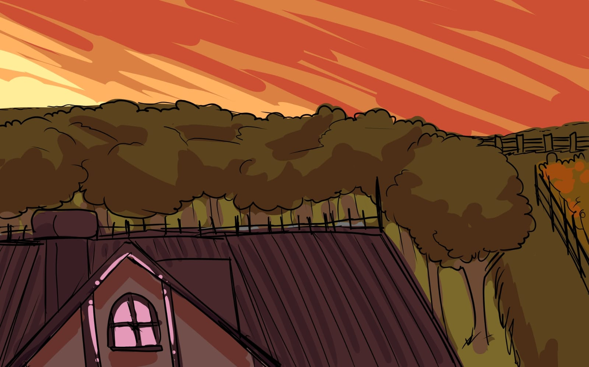

01
Investigação & Pistas
Examine os ambientes, encontre objetos e observe os detalhes que podem revelar novos rastros.
TUDO COMEÇA COM UM DESAPARECIMENTO
“Quando a tradição é roubada na calada da noite, a única opção é seguir os rastros.”
Em uma noite silenciosa e chuvosa, a tranquilidade do interior é partida ao meio. A maior preciosidade da sua propriedade — as valiosas matrizes da raça Nelore, o coração e a história de anos de trabalho duro — desaparece sem deixar vestígios.
No controle da Fazendeira, uma protagonista destemida, você iniciará uma busca para recuperar o que é seu por direito. O que parecia ser um simples roubo de gado é apenas o começo de uma investigação repleta de perguntas.
Quem levou as matrizes? Por quê? E quais rastros foram deixados para trás?
Até onde você iria para proteger seu legado?

EXPLORE, INVESTIGUE, DESCUBRA
Explore o cenário, procure pistas e descubra o que está por trás do desaparecimento.
Examine os ambientes, encontre objetos e observe os detalhes que podem revelar novos rastros.
Percorra cenários rurais, atravesse obstáculos e descubra os caminhos que levam à próxima pista.
Converse com personagens e reúna informações para compreender melhor os acontecimentos.
A tecnologia poderá ajudar a analisar informações e conectar pistas importantes ao longo da jornada.
NEM TUDO É O QUE PARECE
Algumas pessoas podem ajudar. Outras podem esconder mais do que você imagina.

Forte, estratégica e criada na lida do campo, ela conhece o valor de cada animal e de tudo o que construiu. Quando descobre que suas matrizes desapareceram, decide seguir os rastros e descobrir o que aconteceu.
Uma identidade ainda envolta em mistério. Qual será seu papel nessa investigação? Algumas respostas terão que esperar.
Uma rivalidade, perguntas sem resposta e uma identidade que ainda não foi revelada. O que essa figura esconde?
UMA HISTÓRIA A SER DESCOBERTA

Uma história de desaparecimentos, descobertas e personagens cujas verdadeiras intenções ainda precisam ser reveladas.

Cenários inspirados no interior, com ambientes rurais e caminhos que convidam à exploração.

Rastros, suspeitas e perguntas que conduzem a uma investigação maior do que aparenta.

TODA INVESTIGAÇÃO TEM UM PRIMEIRO PASSO
A busca está apenas começando. Você consegue descobrir o primeiro rastro?
JOGUE O INÍCIO DA AVENTURA Prévia do jogo em desenvolvimento.